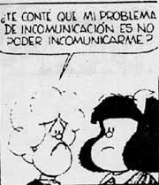
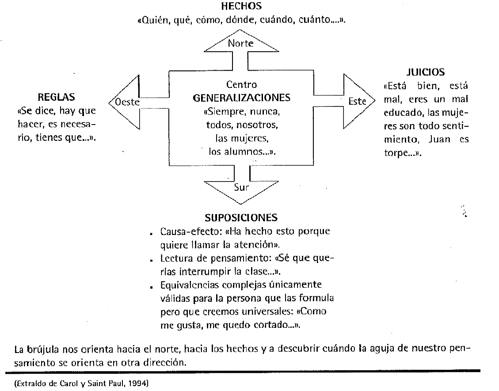
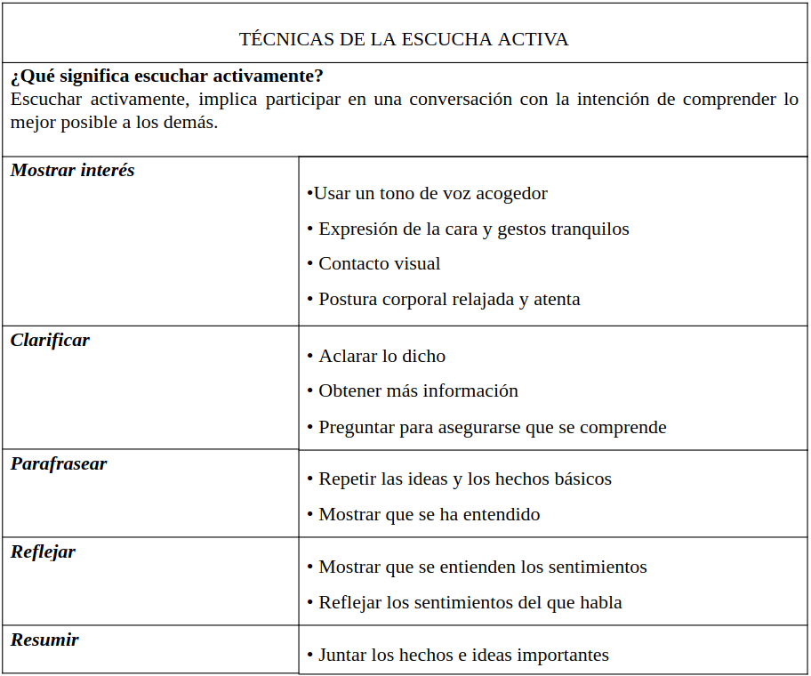
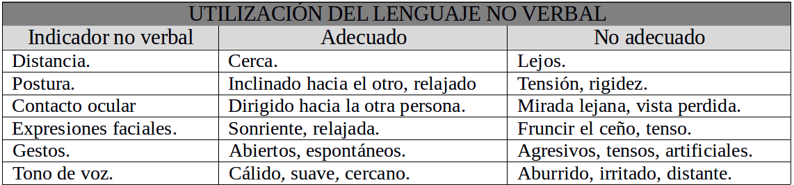

La comunicación como clave para la resolución de conflictos.
La comunicación es la base de las relaciones, o si se prefiere relacionarse es comunicarse.
Axiomas básicos de la comunicación:
“No es posible no comunicarse”: Siempre que estamos con alguien que nos puede percibir, aunque estemos callados, estamos comunicándonos, con los gestos, los silencios, nuestros movimientos…
“Toda comunicación tiene un aspecto de contenido y un aspecto relacional”. Los mensajes no verbales, se refieren sobre todo, a la relación entre las personas que se comunican.

Existe todo un abanico de posibilidades de mejora de la comunicación. Gracias al avance que han tenido las ciencias de la comunicación, ahora sabemos que la forma es tan importante como el contenido, que a comunicar se aprende y que el mensaje que se recibe viene determinado por las palabras, pero también por la intencionalidad, el tipo de relación y las actitudes tanto del emisor como el receptor. Cuando hablamos de mejorar la comunicación, pensamos en unas habilidades comunicativas personalizadas, es decir, cada uno ha de encontrar la concreción que le es propia.
Lenguaje verbal
El lenguaje verbal es un tipo de expresión de la que tenemos conocimiento directo, aunque ello no significa que siempre dominemos sus instrumentos:
1 Precisión del lenguaje para hacer llegar el mensaje.
La precisión es una de las cualidades más indispensables para una buena comunicación, sobre todo porque los malentendidos surgen muchas veces por suposiciones que después se descubre que eran infundadas. La herramienta que me parece más útil para trabajar este aspecto es la denominada brújula del lenguaje (Carol y Saint Paul).
LA BRÚJULA DEL LENGUAJE DE ALAIN CAROL

Parten del concepto de metamodelo que hace referencia a que nosotros tenemos una serie de hábitos, una especie de “programación” interna que hace que en las situaciones respondamos con pensamientos que actúan como marco para interpretar la realidad y a los que le damos una credibilidad total.La brújula del lenguaje es un instrumento a fin de descubrir esos metamodelos.
El concepto básico de brújula comporta que del mismo modo que esta herramienta sirve para detectar donde está el norte, con respecto a la comunicación el norte es allí dónde queremos ir, son los hechos.
El gráfico intenta dirigir nuestra atención a como un lenguaje poco esmerado, hace que los mensajes se interpreten de maneras muy diversas y que entre lo que se dice y lo que se entiende medie un abismo. Precisar y dirigir nuestro mensaje hacia los hechos (norte), nos ayuda a corregir las imprecisiones del lenguaje.
Cuando hablamos de imprecisiones tal y como nos muestra el gráfico nos referimos a:
Generalizaciones: “Todo el mundo sabe que...”/¿todo el mundo?; “Siempre pasa..” / ¿siempre?, etc.
Reglas: Mandar, dirigir, sermonear. “Tienes que...”, “Debes de...” “Deberías cambiar”
Juicios: Emitir juicios negativos o infundados cuando no nos los piden.
Suposiciones: Interpretar la realidad, expresando el motivo oculto de la actitud o conducta.
Saber escuchar – La escucha activa.
Saber escuchar y atender es una cualidad imprescindible de un asesor. Escuchar parece algo sencillo. Sin embargo prestar verdadera atención sin que medie juicio, interpretación o distorsión, constituye una experiencia que requiere un esfuerzo. Se puede hablar de cuatro niveles de escucha:
- Oir: el nivel más superficial, en él sólo percibimos las ondas sonoras del mensaje pero hacemos caso omiso al contenido.
- Escuchar a: el segundo nivel, aún insuficiente para ejercer como buen asesor, porque aunque en este nivel empiezas a atender al contenido del mensaje lo haces desde tu punto de vista, desde tu experiencia y no desde la visión del otro.
- Escuchar para: el tercer nivel, cercano a una buena escucha pero sin llegar a conseguirlo, seguimos manteniendo un diálogo interno ante el mensaje del otro.
- La escucha activa: el cuarto y último nivel, donde el asesor analiza profundamente las palabras del interlocutor con un mínimo de juicio.
Para practicar una escucha activa de calidad, debemos tener el mínimo diálogo interno, rebajar la tensión muscular y relajarse, para facilitar la atención a tu interlocutor y ampliar el campo de visión para que tu mente esté más abierta y receptiva.
Los objetivos de la escucha activa son fundamentalmente dos:
- Asegurar al interlocutor que hemos recogido y entendido su mensaje y
- Animar al interlocutor a emitir nuevos mensajes.
La escucha activa no es una capacidad innata para todo el mundo y necesita de aprendizaje y práctica continuada. Actualmente sabemos que a escuchar se aprende con la práctica. En la mayoría de textos sobre comunicación encontramos ejercicios para mejorar la comunicación. Una posible propuesta es la que se muestra en las siguientes tablas.
REGLAS DEL ARTE DE ESCUCHAR
- Escuchar ideas, no datos.
- Evaluar el contenido, no la forma.
- Escuchar con optimismo.
- No saltar a las conclusiones.
- Tomar notas.
- El pensamiento va más rápido que el sonido.
- Mantener la mente abierta…

Si queremos desarrollar de manera efectiva la escucha activa, debemos evitar las siguientes situaciones:
Llevar la contraria, aconsejar, dar soluciones a todo.
Desviar la conversación, cambiar de tema o de idea.
Pensar sólo en lo que vamos a decir, sin estar atento a las palabras de la otra persona.
Creernos capaces de anticipar lo que dirá el otro.
Soñar despierto y pensar en cualquier otra cosa que no venga al caso.
Interrumpir al otro cuando habla.
El error más habitual es querer hablar primero y expresar nuestro punto de vista a toda costa, de ahí que nos concentremos únicamente sobre la idea que queremos trasmitir, y no sobre lo que nos están diciendo. Esta forma de distraerse perjudica seriamente la comunicación. Para escuchar bien es importante olvidarse de nuestros problemas, deseos y objetivos personales y, por contra, mostrarse más dispuesto y atento hacia los demás.
Lenguaje no verbal
La comunicación también nos llega a través del lenguaje no verbal. Cuando hablamos de comunicación no verbal, nos referimos a una gran cantidad de elementos que influyen en las relaciones entre las personas y que no se corresponden exactamente con las palabras que esas mismas personas intercambian. Se afirma que el setenta por ciento del contenido del mensaje se da a través del lenguaje no verbal. Con independencia de estos datos, lo que podemos afirmar es que el lenguaje no verbal nos transmite esencialmente los componentes emocionales del mensaje.
Todos emitimos mensajes no verbales constantemente, y ello es lo que hace imposible el “no comunicar”. Aunque estemos callados, cuando estamos en interacción con alguien, nos comportamos de alguna manera concreta, miramos o cerramos los ojos, o apartamos la cara, o nos frotamos las manos o no nos las frotamos…; en cualquier caso hacemos “algo”, tenemos una “conducta”. Y la conducta que tengamos, en una situación de comunicación, es un mensaje, aunque sea un mensaje dudoso o involuntario. Si tenemos en cuenta que no existe lo contrario de la conducta, que no existe la “no conducta”, entonces tenemos que admitir que no existe la posibilidad de “no comunicar”. Siempre que estamos con alguien que nos puede percibir, estamos comunicándonos de manera no verbal: con los gestos, con nuestro aspecto físico, con los sonidos que emitimos, con los silencios…
No podemos ser exhaustivos, ya que la cantidad de posibilidades que tiene el mensaje no verbal es muy amplia. Resumiendo nos podemos quedar con un conjunto de objetivos concretos:
- Encontrar la distancia adecuada para la comunicación.
- Mantener una postura relajada y activa.
- Dirigir el contacto visual hacia la persona. Mirarla.
- Mantener una expresión facial sonriente y relajada.
- Hacer gestos abiertos y espontáneos.
- Expresarse en un tono de voz cálido y suave.
